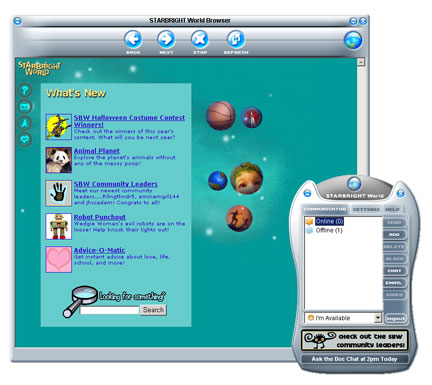
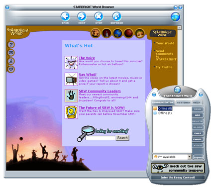
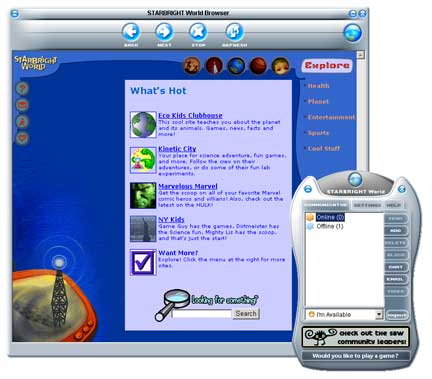
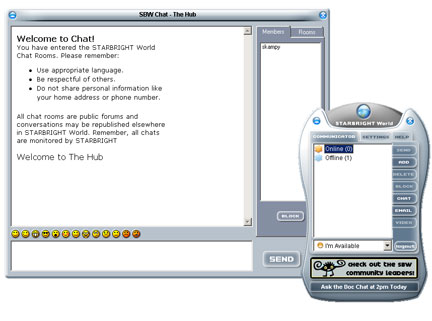
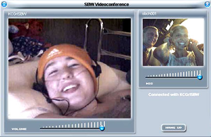

13 Jun 2004
13 Jun 2004
First Posted
 Subclassing Without The Crashes
Subclassing Without The Crashes
 Reading Data from Local or External Library Resources
Reading Data from Local or External Library Resources
 Moving Forms and Creating Resize Gripper Boxes
Moving Forms and Creating Resize Gripper Boxes
 Creating Window Shapes from Bitmaps
Creating Window Shapes from Bitmaps
 Sophisticated Control Over Window Sizing and Moving
Sophisticated Control Over Window Sizing and Moving
 Generating MouseLeave Events for a Window
Generating MouseLeave Events for a Window
 Win32 Hooks in VB - The vbAccelerator Hook Library
Win32 Hooks in VB - The vbAccelerator Hook Library

STARBRIGHT World
STARBRIGHT World is a private online community for children living with serious illness. In STARBRIGHT World, children can instant message, chat, video conference, browse topical web content, post to message boards and more, all within a private community only they can access. The current version of the system has been running since mid-January, and has been a great success.
About STARBRIGHT World
The SBW application has five main categories: SBZone, Explorer, Connect (Chat and Videoconference), Activities and Find-A-Friend. Examples of the screens, and some detail of the functionality are shown below:
STARBRIGHT Zone features all of the content created by STARBRIGHT specially for our users. Examples of this content include essay contests, SBW Community Leaders(a program that promotes leadership and excellence among our users) as well as the SBW E-Zine Scene (an online magazine written by our users.)
Explore is where users can get access to the hottest Web sites organized in 5 easy-to-navigate categories: Health, Planet, Entertainment, Sports and Cool Stuff. This allows SBW to feature pre-screened Web content appropriate for our users.
Online chat allows users to log in to chat with each other, talk to the hosts or just hang out and listen to what's happening.
Videoconferencing allows users to talk to each other live. This is an especially useful tool when one child is in isolation but wants to participate in playroom activities or connect with visiting family members or friends.
Using vbAccelerator Code
STARBRIGHT World is written entirely in VB6 and used a number of techniques and utilities from the site:
- Moving Forms and Creating Resize Gripper Boxes
- Generating MouseLeave Events for a Window
- Sophisticated Control Over Window Sizing and Moving
- Subclassing Without The Crashes
- Win32 Hooks in VB - The vbAccelerator Hook Library
- Complete Registry control
- Changing Window Shapes
- Reading Data from Local or External Library Resources
More about the STARBRIGHT Foundation
The STARBRIGHT World project is described, along with more information and screen-shots at http://www.starbright.org/projects/sbworld/.
You can find out more about the STARBRIGHT Foundation and their work helping children living with serious illness at their site, http://www.starbright.org/.